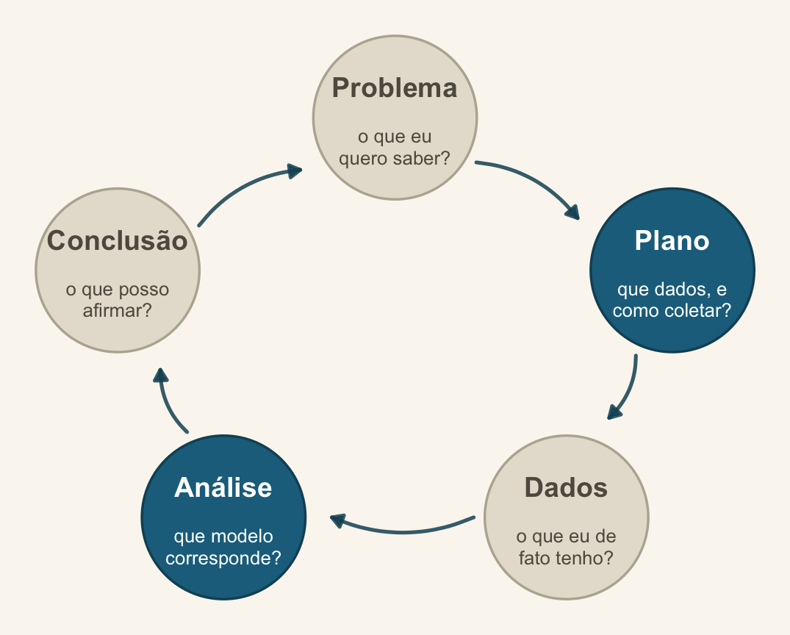
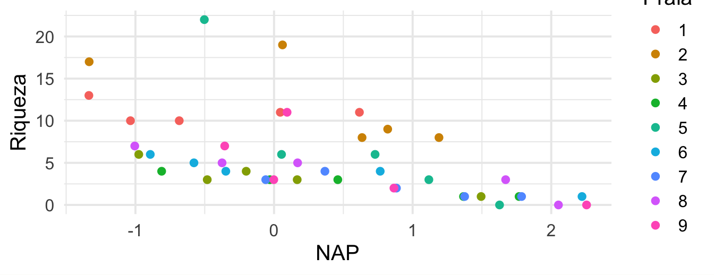
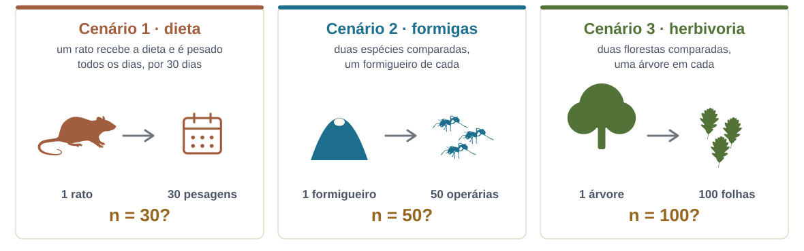
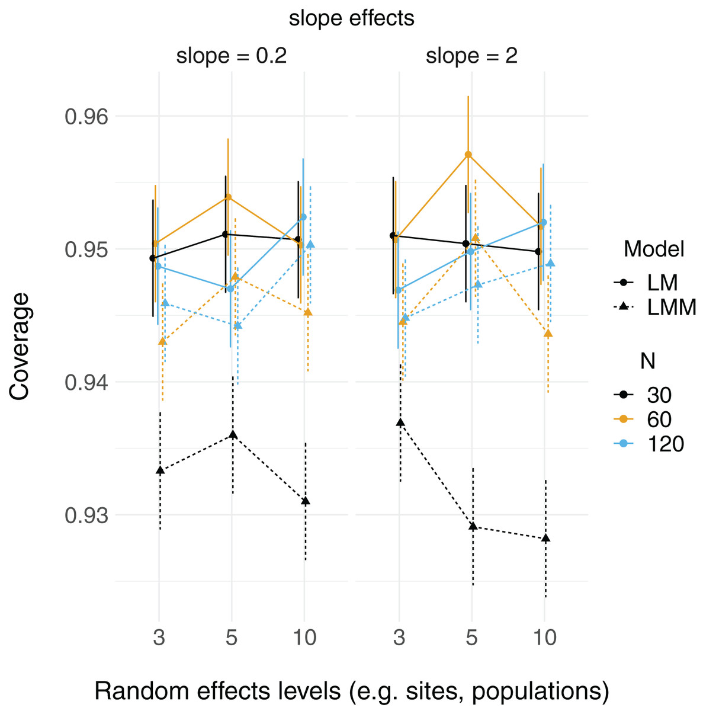
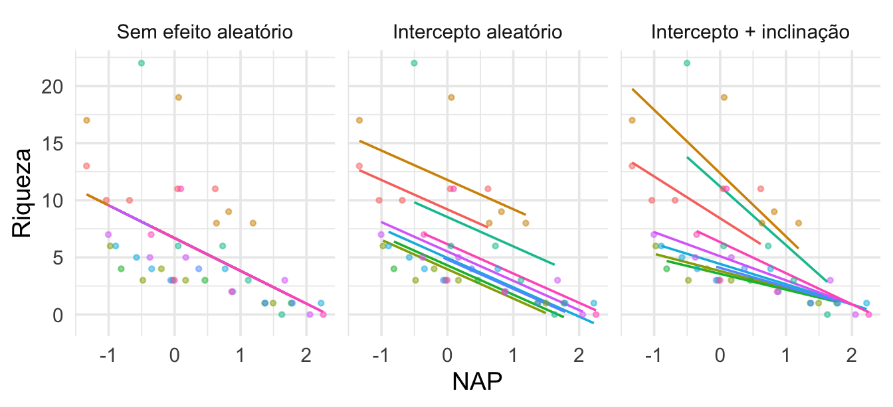
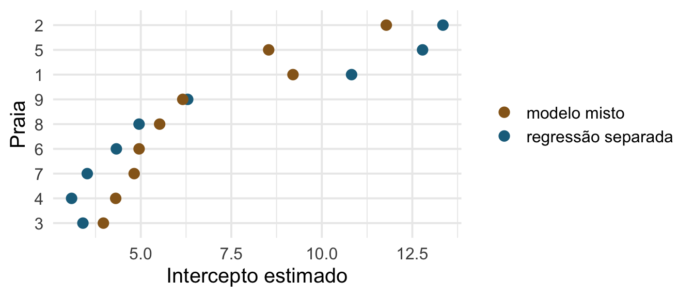

Encontro 7 · Análise de Dados Univariados · PPGBA/UFMS
24 de setembro de 2026

O encontro em que Plano e Análise se encontram: a estrutura do modelo tem de espelhar a estrutura da amostragem.
Das quatro premissas do modelo linear, a mais importante é a independência — e é a que quase todo delineamento ecológico viola.
Duas amostras da mesma poça se parecem mais entre si do que com amostras de outra poça. Duas medidas do mesmo indivíduo, idem. Isso é informação, não ruído — e o modelo precisa saber disso.
lmer: shrinkage, ICC, variânciasRiqueza de invertebrados em 45 amostras, distribuídas em 9 praias, com a altura da amostra em relação ao nível do mar (NAP).

Em grupos: qual o n desta análise — 45 ou 9? E que diferença isso faz?
Cinco minutos, em duplas. Em quais destes há réplica de verdade?

A pergunta que resolve os três: qual é a unidade que foi de fato replicada no fator que me interessa?
Silhuetas do PhyloPic, todas sob CC0 1.0: Rattus norvegicus por Arcadia Science, Solenopsis invicta por Richard J. Harris e a folha de Quercus petraea por Pablo Castro Sánchez-Bermejo.
Em todos, o que se replicou foi a medida, não a unidade que recebe o tratamento. O rato é um, o formigueiro é um, a árvore é uma. Trinta pesagens do mesmo rato dizem muito sobre aquele rato e quase nada sobre a dieta.
E repare que nenhum deles é erro de conta: os trinta pesos existem, foram medidos com cuidado e estão corretos. O que não existe é a informação que o n = 30 promete.
Não se conserta na análise: ou o delineamento replicou a unidade certa, ou não replicou. O que dá para fazer — e é o resto desta manhã — é modelar a dependência em vez de fingir que ela não existe.
Tratar como réplicas independentes observações que compartilham a mesma unidade experimental (Hurlbert 1984).
O efeito prático é sempre o mesmo: o modelo acha que tem mais informação do que tem, os erros-padrão encolhem, e o valor de p fica otimista.
Em nenhum desses casos a solução é “tirar a média por grupo”. Isso joga fora variação real e desperdiça graus de liberdade. As três primeiras têm a mesma forma — pares mais próximos no espaço, no tempo ou na filogenia são mais parecidos — e é por isso que os remédios se parecem: uma estrutura de correlação que diz quem é vizinho de quem. Para a filogenética, isso é PGLS ou modelo misto filogenético.
lm_ep lmer_ep
0.631 0.495 O modelo que ignora a estrutura de praias promete mais precisão do que os dados sustentam.
n_original n_agregado ep_agregado
45.00 9.00 2.92 Agregar resolve a pseudorreplicação — e destrói a variação dentro das praias, que é justamente onde o NAP varia mais.
Um efeito aleatório trata os níveis do fator como uma amostra de uma população de níveis. O que se estima não são os níveis, e sim a variância entre eles.
Nove praias não são nove parâmetros: são nove desvios de uma distribuição com desvio-padrão \(\sigma_{\text{praia}}\), que é um parâmetro.
\[ y_{ij} = \underbrace{\beta_0 + \beta_1 x_{ij}}_{\text{efeitos fixos}} + \underbrace{b_j}_{\text{efeito aleatório}} + \varepsilon_{ij} \]
\[ b_j \sim \mathcal{N}(0, \sigma^2_{\text{praia}}), \qquad \varepsilon_{ij} \sim \mathcal{N}(0, \sigma^2) \]
Repare que há dois níveis de variação agora. É por isso que “modelo hierárquico” e “modelo multinível” são sinônimos de modelo misto.
ICC = proporção da variação total que está entre praias. Aqui, 48 % — ou seja, duas amostras da mesma praia se parecem bastante. Ignorar isso seria caro.
| Pergunte | Fixo | Aleatório |
|---|---|---|
| Os níveis são os que interessam, ou uma amostra? | são estes | são uma amostra de muitos |
| Você quer estimar cada nível? | sim | não, quer a variância |
| Quantos níveis há? | poucos | idealmente ≥ 5 |
| Quer prever para níveis novos? | não dá | sim |
“Espécie” pode ser fixo ou aleatório na mesma tabela de dados — o que decide é a pergunta. Duas espécies comparadas: fixo. Quarenta espécies como amostra de uma comunidade: aleatório.
A tabela acima é uma regra de bolso, não uma definição. A seção “Should I treat factor xxx as fixed or random?” do GLMM FAQ, de Ben Bolker e colaboradores, reúne cinco definições diferentes de “efeito aleatório” catalogadas por Gelman (2005) — e elas não coincidem. Vale ler antes de discutir com um revisor.
Com 3 ou 4 níveis, a variância do efeito aleatório é estimada com péssima precisão — frequentemente colapsa para zero.
Regra prática comum: abaixo de 5 níveis, considere tratar como fixo. Não é uma lei; é um aviso de que você tem pouca informação para estimar uma variância.

No eixo y, a cobertura do intervalo de 95% dos efeitos fixos: em quantas das 10 mil simulações o valor verdadeiro caiu dentro do intervalo. No eixo x, o número de níveis do fator de agrupamento.
Ela fica em torno de 0,95 com 3, 5 ou 10 níveis. A única série claramente abaixo é o modelo misto com n = 30 — o que derruba a cobertura é o tamanho amostral, não o número de níveis.
Se o agrupamento entra só para acomodar a dependência — um nuisance — menos de cinco níveis pode ser aceitável. Se a variância entre grupos é a sua pergunta, a regra continua valendo: essa variância segue subestimada com poucos níveis.
Figura 2 de Gomes, D.G.E. 2022. Should I use fixed effects or random effects when I have fewer than five levels of a grouping factor in a mixed-effects model? PeerJ 10:e12794, sob CC BY 4.0. O próprio autor fecha pedindo mais simulações antes de generalizar.
15 minutos.
Na volta: intercepto e inclinação aleatórios.
(1 | Beach) — cada praia tem sua própria riqueza basal.(NAP | Beach) — cada praia tem também sua própria resposta ao NAP.
| Fórmula | Significado |
|---|---|
(1 | g) |
intercepto aleatório por g |
(x | g) |
intercepto e inclinação de x, correlacionados |
(0 + x | g) |
só inclinação |
(1 | g/h) |
h aninhado em g |
(1 | g) + (1 | h) |
fatores cruzados |
Aninhado × cruzado é fonte constante de erro. Regra: se o nível “1” de h na praia A não é o mesmo que o “1” da praia B, é aninhado. A seção “Model specification” do GLMM FAQ traz esta mesma tabela com mais linhas, cada fórmula ao lado da equação correspondente, e um conselho que evita o problema na origem: nomeie os níveis aninhados de forma única (A1, A2, …, B1, B2, …), e aí não há como confundir aninhado com cruzado.

As estimativas do modelo misto são puxadas para a média geral — mais ainda nas praias com menos amostras.
Shrinkage não é um defeito: é o modelo reconhecendo que uma média baseada em 3 amostras é menos confiável que uma baseada em 9, e pedindo emprestada informação das outras praias.
É o mesmo princípio da regularização bayesiana — e, de fato, um efeito aleatório é uma prior sobre os níveis do fator. Voltamos a isso à tarde.
Estimate Std. Error t value
(Intercept) 6.581893 1.0957618 6.006682
NAP -2.568400 0.4947246 -5.191574Sem coluna de valor de p. Isso é deliberado: não há um número exato de graus de liberdade para o denominador num modelo misto desbalanceado.
| Abordagem | Como |
|---|---|
| Aproximação de Satterthwaite | lmerTest::lmer() — dá a coluna de p |
| Kenward–Roger | pbkrtest — mais conservador, melhor em amostra pequena |
| Razão de verossimilhanças | anova(m0, m1) — cuidado com REML |
| Intervalo de confiança | confint(m, method = "profile") |
| Teste por termo | car::Anova(m, type = "II") — qui-quadrado de Wald |
| Tabela pronta | parameters::model_parameters() — estimativa, IC e p numa tabela só, com ci_method à sua escolha |
| Bayesiano | intervalo de credibilidade, sem o problema |
glmmTMB?Ele imprime valor de p no summary(), e o lmer não. Isso não é porque o problema foi resolvido: o glmmTMB usa o grau de liberdade do denominador como infinito — a estatística é um z de Wald assintótico. O lmer se recusa a fazer essa aproximação em silêncio.
Com muitos níveis e amostra grande, a aproximação assintótica é inofensiva. Com poucos níveis ou amostra pequena, ela é anticonservadora: o p sai menor do que deveria.
Para testar um termo inteiro — um fator com vários níveis, uma interação — use car::Anova() sobre o ajuste do glmmTMB; o único teste disponível ali é o qui-quadrado de Wald. E o parameters::model_parameters() monta a tabela de saída dos dois mundos, aceitando ci_method = "satterthwaite" ou "kenward" quando o modelo permite.
Relate estimativa e intervalo, não o valor de p. O intervalo responde à pergunta biológica (“de quanto é o efeito?”) e contorna a discussão sobre graus de liberdade.
lmer) — estima as variâncias sem viés. Use para o modelo final e para comparar estruturas aleatórias.Comparar efeitos fixos com REML é um erro silencioso — o anova.merMod reajusta com ML automaticamente e avisa, mas o AIC calculado à mão, não.
Checklist: Harrison, X.A. et al. 2018. A brief introduction to mixed effects modelling and multi-model inference in ecology. PeerJ.
À tarde: respostas não gaussianas com efeitos aleatórios — e o mesmo modelo em bayesiano.
Análise de Dados Univariados · PPGBA/UFMS · 2026/2